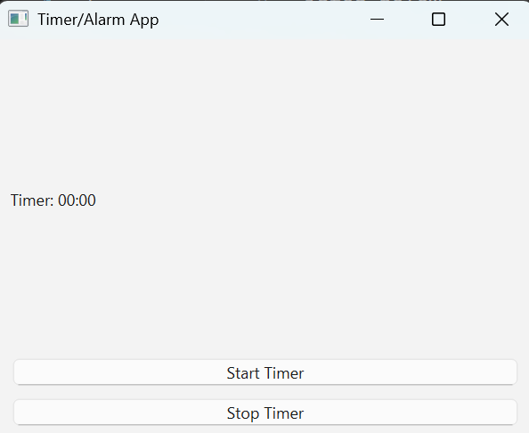
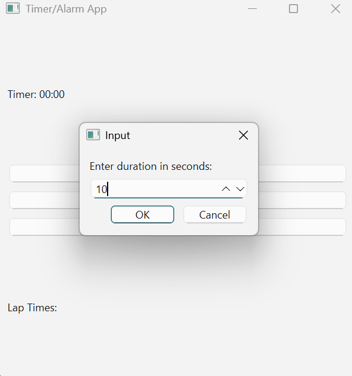
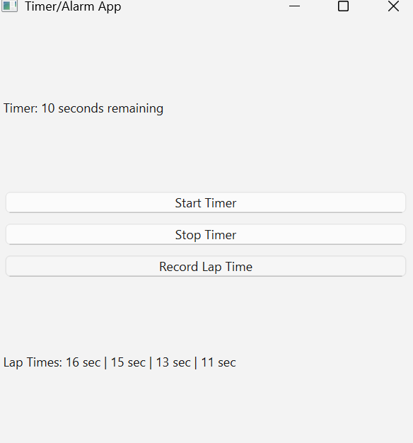

Profile
所属: 大阪公立大学工業高等専門学校
総合工学システム学科 二年知能情報コース
年齢: 17歳
趣味: ゲーム、音楽、映画鑑賞
Projects
Individual
- ＊プログラミングの授業の取り組みとしてPythonを用いたカレンダー機能の制作を行いました。
日付ごとに予定を入れたり、削除することができます。
また、すべての予定を一括で表示したり、曜日ごとに予定を固定することができます。 - ＊Visual Studio Code上でHTMLとCSSを駆使してポートフォリオを制作しました。
- ＊音声翻訳アプリ
音声録音型の翻訳アプリを制作しました。
このアプリはユーザーが簡単に音声を翻訳し、その結果を音声として聞くことができる便利なツールです。
また、英語や中国語をはじめとする60以上の言語に対応しており、使い方は非常に簡単です。
①アプリを起動し、「音声を録音」ボタンをクリックして日本語で話しかけます。録音が完了すると、アプリが音声を文字起こしし、文章として表示します。
②翻訳したい言語をドロップダウンメニューから選択すると、選択した言語に翻訳された文章が表示されます。
③「翻訳結果を再生」ボタンを押すと、翻訳された文章が音声として再生されます。さらに、翻訳結果を保存して後で再生することも可能です。
制作時期:2025年1月 コードはこちらから


- ＊タイマー/アラームアプリ
このアプリは、ユーザーが指定した時間にアラームを設定し、時間が来ると通知とメッセージを受け取ることができるシンプルなタイマー兼アラームアプリです。扱い方は非常にシンプルです。
① アプリを起動し、時間を設定して「スタート」ボタンを押すだけでタイマーが開始されます。
② 時間が経過すると、アラーム音が鳴るとともに、画面には「timer finished!」というメッセージが表示されます。
③ さらに、タイマーを途中で停止することも可能です。
制作時期:2025年2月 制作時間:12時間 コードはこちらから   - ＊2024年度高専祭の展示作品でノベルゲーム「高専ダイアリー」のティザー映像を制作しました。
その中では登場キャラクターの名前や設定、デザインを担当しました。
ゲーム本体は現状未完成です。
Collective
Skills
 Python・・授業で学習した基礎的な部分は習得済みです。
Python・・授業で学習した基礎的な部分は習得済みです。 VSCode・・このポートフォリオを作るにあたって必要な程度は習得済みです。
VSCode・・このポートフォリオを作るにあたって必要な程度は習得済みです。 Scratch・・授業で学習した基礎的な部分は習得済みで、中学校でも経験があります。
Scratch・・授業で学習した基礎的な部分は習得済みで、中学校でも経験があります。 GitHub・・このサイトを運用するにあたって必要な程度は習得済みです。
GitHub・・このサイトを運用するにあたって必要な程度は習得済みです。 Arduino・・授業で学習した基礎的な部分は習得済みです。
Arduino・・授業で学習した基礎的な部分は習得済みです。 HTML, CSS・・このポートフォリオを作るにあたって必要な程度は習得済みです。
HTML, CSS・・このポートフォリオを作るにあたって必要な程度は習得済みです。- Ambient, RealVNC・・実験実習科目にて使用し、Raspberry Piによる遠隔操作にも運用できます。